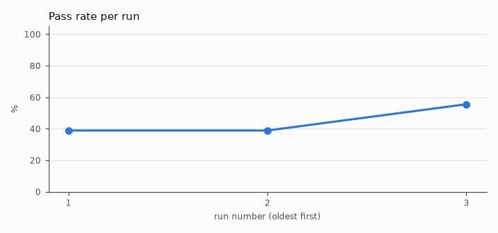
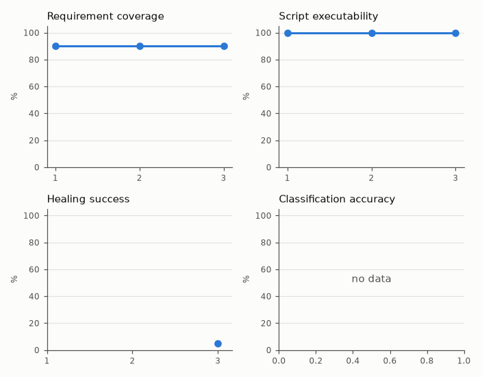
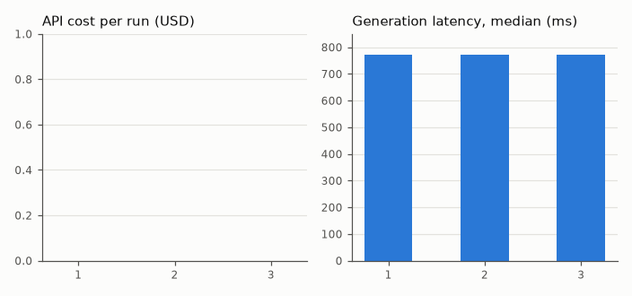

AITAF dashboard
Summary first, charts second, every figure also in the table.
Latest run
Run 8f9a11fc774142b683d80014029a8117, provider mock.
- Pass rate55.6%
- Requirement coverage90.0%
- Script executability100.0%
- Healing success rate5.0%
- Classification accuracyn/a
- Generation latency (median)773 ms
- API cost$0.0000
Trend over runs

Line chart of the pass rate of each run, oldest run first.
Four small line charts over the runs: requirement coverage, script executability, healing success and classification accuracy, in percent.
Two bar charts over the runs: API cost in US dollars and median generation latency in milliseconds.Run table
All stored runs, oldest first| # | Run | Provider | Tests | Passed | Failed | Pass rate | Requirement coverage | Script executability | Healing success rate | Classification accuracy | Generation latency (median) | API cost |
|---|
| 1 | e3ecdecf17ad49589e00348228641c82 | mock | 54 | 21 | 33 | 38.9% | 90.0% | 100.0% | n/a | n/a | 773 ms | $0.0000 |
| 2 | db5629377e1b4e809ebc15d0615d98b9 | mock | 54 | 21 | 33 | 38.9% | 90.0% | 100.0% | n/a | n/a | 773 ms | $0.0000 |
| 3 | 8f9a11fc774142b683d80014029a8117 | mock | 54 | 30 | 24 | 55.6% | 90.0% | 100.0% | 5.0% | n/a | 773 ms | $0.0000 |
How each number is counted
- Pass rate: passed tests over executed tests (skipped tests excluded)
- Requirement coverage: requirements with at least one approved test case over all requirements
- Script executability: scripts whose test ran to a pass or a fail (no error) over scripts generated
- Healing success rate: steps with a proposed locator over steps that asked for healing
- Classification accuracy: failures whose category equals the supplied label over labelled failures
- Generation latency (median): analyze and generate steps of the three generation components, LLM time included
- API cost: sum of token costs of the runs involved (zero for the mock provider)
Coverage, executability and cost use the latest analysis run as source. Mock-provider figures describe the pipeline, not model quality.